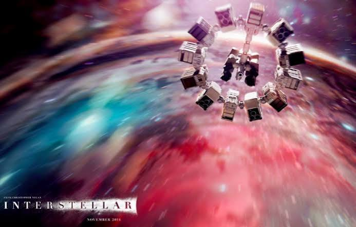

DecideX
When every option feels equally good or bad, this app gives the decision some structure. I worked on the criteria scoring, mood and urgency inputs, result breakdown and history so the answer shows how it was reached.
Open project ↗Mumbai, 2026 / An open line from the lookout
I’m Ryan, a third-year Data Science student in Mumbai. Most of my work starts with a question and turns into data, an app, or a lot of debugging. Outside class, I’m usually reading or watching something I’ll want to talk about later.
Projects and data, with all the messy parts in between.
Four outposts / one open channel
Where do you want to go?Tap a lit building. Or walk there with your arrow keys.
The archive / selected work
Class projects, side projects and smaller web builds. Each one has a story behind the code, the data or the decision.
From an Android app to live game rooms and services that have to talk to each other.
When every option feels equally good or bad, this app gives the decision some structure. I worked on the criteria scoring, mood and urgency inputs, result breakdown and history so the answer shows how it was reached.
Open project ↗A multiplayer playground with login, rooms and live game events. I worked on keeping players in sync as actions happened, and learned how quickly shared state gets messy when two people act at once.
Open project ↗I put a frontend, API, database and Nginx together with Docker Compose. Getting the services to connect, and working out which layer caused a problem, taught me more than seeing each part run alone.
Open project ↗Posts I wanted to revisit kept getting lost in bookmarks and chats. I tried building an extension to collect links from Instagram and X in one place, focusing on a simple save-and-find flow.
Open project ↗I wanted a task board that made a normal week easier to see without adding more clutter. I worked on the task state, completion count and local storage.
Read about Dayline ↗A title and a tick box never captured why I loved a film or show. I built a small personal watchlist with ratings and a note for the thought that stayed.
Read about Framebook ↗Compare real data and make the assumptions behind a chart easier to see.
We compared HDFC, SBI and Nippon India Gold BeES using returns, volatility, Sharpe ratio and liquidity. Putting those measures side by side made it clear that the answer changes depending on what matters most.
Open project ↗I took a flat dataset, split it into related tables, then built API endpoints and a dashboard to explore titles, genres, people and countries. The interesting part was making the data useful to query.
Open project ↗Mumbai commutes made me curious about where demand starts to outrun capacity. I used fictional route data and an SVG chart to explore that relationship.
Read about CityFlow ↗A table of purchases can hide the pattern. I built a simple CSV parser and category breakdown to make the totals easier to read.
Read about SpendScope ↗A prediction API and two small ways to see what an algorithm is doing.
I trained a model on four flower measurements and put it behind a Django REST endpoint. Input validation and authentication mattered as much as returning the species prediction as JSON.
Open project ↗The centroid formula made more sense to me once I could see it move. I built a step-by-step visual for point assignments and new centres.
Read about Cluster Lab ↗I wanted to see why changing k can change a classification. The visual uses distances and neighbour votes to show how that decision happens.
Read about Neighbor Lab ↗The cinema / outside class
When class and code are done, this is where a lot of my time goes: books, films, shows, anime, manga, games and music.
Some of my first movies were CDs Dad brought home around 2010: Ghost Rider, TRON and Avatar. WALL·E, Toy Story and Cars were part of childhood too, but books were my favourite for years. I read over 200+ books between ages 7 and 15—Diary of a Wimpy Kid, Tom Gates, Goosebumps, Enid Blyton mysteries, Percy Jackson, Harry Potter, The Maze Runner, Divergent, The Lord of the Rings, The Silent Patient and plenty more.
Then Interstellar blew me away in 2020. Two years later I went looking for it again, found a lot more films along the way, and got into TV shows. After Lucifer, Attack on Titan came up as a recommendation. That led to anime, then manga and manhwa, and eventually games.
In my free time I still jump between a book, a match in Haikyu!!, a film and whatever game has a story I can't put down. Attack on Titan changed the way I think about whose side of a story I'm hearing; Violet Evergarden made me pay more attention to what people struggle to say. Those stories are fun first, but they stay with me long after the credits. I think that's part of why I like studying data too: a result means more when I understand the people and context behind it.

01 / THE FILM THAT STARTED IT AGAIN02 / ONE MORE CHAPTERFilms, books, games and the stories that stayed.
Open the full shelf ↗The workshop / about & tools
I'm Ryan, a third-year MBA Tech Data Science student at NMIMS MPSTME in Mumbai. I like following a project from the first messy idea to something I can actually run and explain.
My work has moved across data, apps and the systems underneath them. For a Gold ETF analysis, our team compared returns and risk instead of picking a winner from one number. In Netflix analytics, I went from a flat dataset to related tables, API endpoints and a dashboard. With DecideX, I wanted the result to show its reasoning instead of just giving an answer.
I've also built a Django REST endpoint for an iris prediction model and experimented with real-time game rooms using Socket.IO. Putting a Next.js frontend, FastAPI backend, PostgreSQL database and Nginx together with Docker Compose made me pay attention to the space between services: what connects, what fails and how to find the cause.
That's what pulled me toward Linux and cloud. I've finished AWS Cloud Technical Essentials and I'm working through Linux commands and shell scripting now. I'm still learning, but I want to understand how something gets from my laptop to a system other people can use.
Outside coursework, I read and watch a lot of stories. They keep me curious about people and perspectives, which matters when the data or software is supposed to help someone in the real world.
Python · SQL · pandas · Excel · Power BI · statistics · scikit-learn
HTML · CSS · JavaScript · React / Next.js · FastAPI · Django REST · Node.js
PostgreSQL · MySQL · Git · Docker Compose · Nginx · Socket.IO
Linux commands · shell scripting · AWS and cloud fundamentals
The lookout / open channel
A project question, an idea, or a film I should watch next — I’d like to hear it.